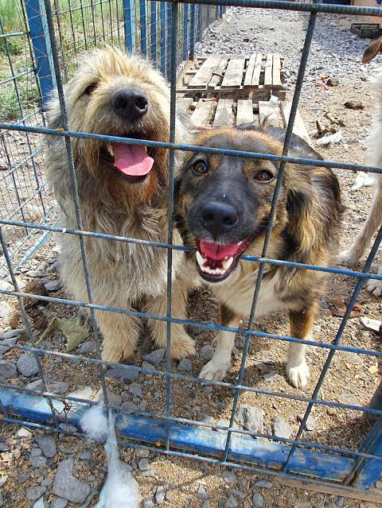
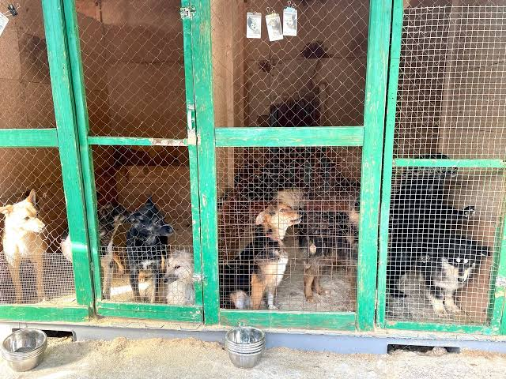

Dogs Looking for Homes
Dogs at a shelter may need regular walks, food, veterinary attention and social interaction.
Meet some of the animals who need care, attention and a safe home.
The shelter I Am Alive helps homeless animals in Astana. Public information about the shelter mentions dogs, cats and rabbits among the animals receiving help.
The exact number of animals can change, so this website does not invent a current population number.
Dogs at a shelter may need regular walks, food, veterinary attention and social interaction.

Regular walks and attention help shelter dogs stay active and become more comfortable around people.

Animals at the shelter may need food, clean water, veterinary care, safe housing and regular attention.
Always ask the shelter about the current adoption status of an animal before visiting.
Animals at the shelter may need food, clean water, veterinary care, safe housing and regular attention.
Always ask the shelter about the current adoption status of an animal before visiting.
Public reviews of the shelter also mention rabbits. Information about individual animals should be confirmed directly with the shelter.
A 2023 publication described the story of Jack, a dog who arrived at I Am Alive in 2020 in very poor condition. After treatment and a long period of adaptation, Jack found a family in February 2021.
"Все преодолимо. Мы же люди. Мы и больше сделать можем, стоит только захотеть."
— Natalia, Jack's adopter, quoted by Sxodim
The published story describes how regular visits, walks and patience helped Jack adapt to his new family.
The story is an example of why adoption should be based on patience, preparation and responsibility.
Address: Akkorgan Street 5V, Astana, Kazakhstan.
Phone: +7 (702) 481-01-58
Email: nilazoki@mail.ru